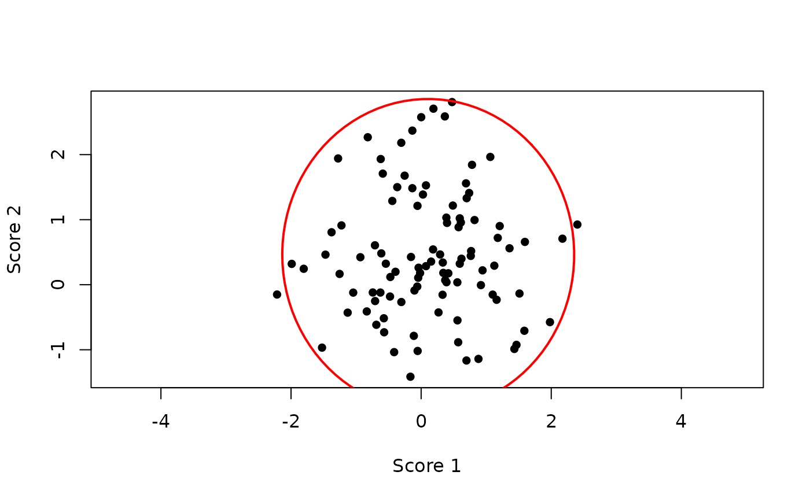

Generates coordinates of a two-dimensional ellipse corresponding
to a Hotelling T^2 region projected onto selected dimensions.
Usage
ellipse2d(obj, dims = c(1, 2), npoints = 100)
Arguments
- obj
A list as returned by hotellingsT2().
- dims
Integer vector of length 2 specifying which dimensions to project
onto. Default is c(1, 2).
- npoints
Integer. Number of points used to approximate the ellipse.
Default is 100.
Value
A data.frame with columns x and y containing
ellipse coordinates.
Details
The ellipse is obtained by projecting the multivariate T^2 ellipsoid onto
the specified dimensions. The scaling is derived from the Hotelling T^2
statistic and accounts for sample size and dimensionality.
Examples
set.seed(1)
X <- cbind(rnorm(100), rnorm(100) + 0.5)
t2 <- hotellingsT2(X)
ell <- ellipse2d(t2)
plot(X[,1], X[,2], asp = 1, pch = 16,
xlab = "Score 1", ylab = "Score 2")
lines(ell$x, ell$y, col = "red", lwd = 2)
